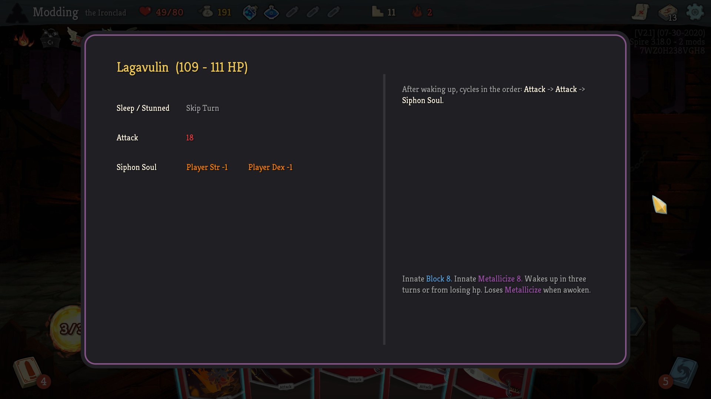
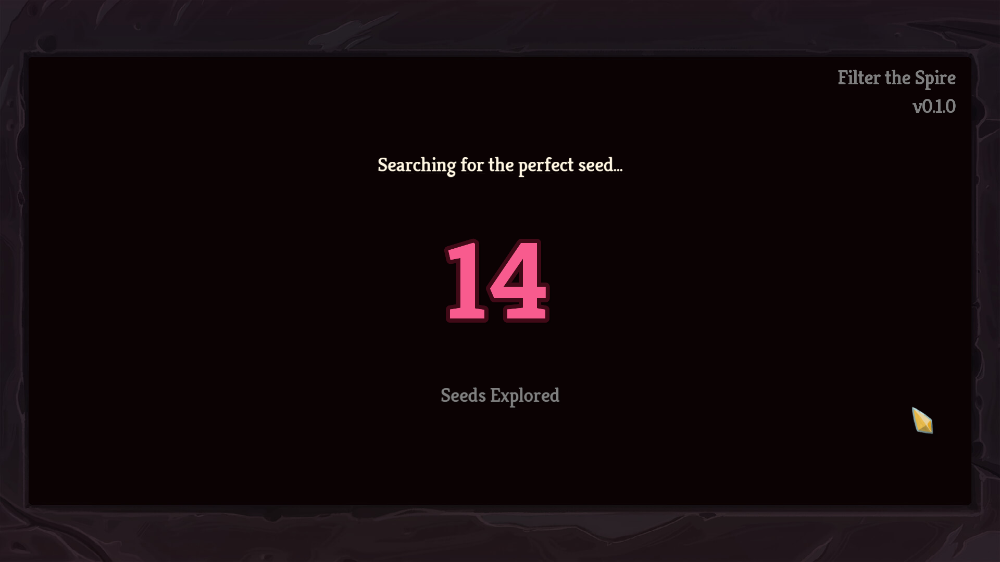
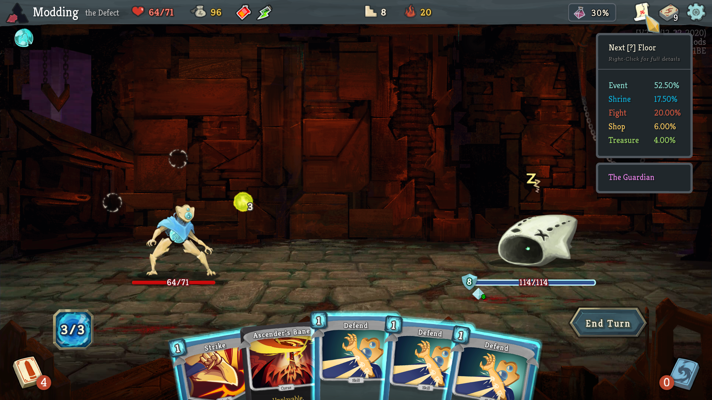

Overview
Hello - welcome to my site! In here you'll find a curated collection of some of the mods I've developed and polished enough for "official" releases. These are the mods that I've found worthwhile enough for general audiences - but it is far from the bulk of the mods I've developed! Most of my more experimental mods exist hidden away in my Github repositories, but very few of them are intended for regular use.
As I continue polishing up and releasing these ongoing projects, I'll update this site to serve as a decent hub of information about all the mods I've created. You can navigate this site using the table of contents on the left pane or use the arrow keys on your keyboard to ← navigate → between pages.
Installing My Mods
These instructions are for Github releases only
If you see a Steam Workshop link - use that instead! It will simplifiy the process greatly and you won't have to manually download and update my mods.
If I haven't yet released a Workshop link, it's likely that I didn't feel the mod to be polished / ready enough for a full release (e.g. having issues like not scaling nicely for non 1080p displays, performance hiccups or crashes, or otherwise buggy or incomplete behavior). So if you're following these instructions, it's probably for one of my more experimental / in development mods. I still accept bug reports for these mods, but there's a lot of projects that are abandoned due to time constraints that I may never get to them.
With that disclaimer out of the way, here's how to install Slay the Spire mods:
Quick Instructions
-
Make sure to obtain and enable ModTheSpire and BaseMod.
-
Download the latest
.JARfile from the releases page of the mod. -
Place the
(modname).JARinto yourSlayTheSpire/modsfolder -
Launch the game with mods, and be sure to enable ✓ both BaseMod and my mod(s).
Detailed Instructions (if the above instructions didn't make sense)
- Download ModTheSpire and BaseMod. These mods are available from the Steam Workshop and are are REQUIRED libraries that my mods use to function correctly. If you don't have them installed and enabled, your game will not even load, so get them!
You should subscribe to them on Steam and it will automatically download and keep them updated for you.
NOTE: If you don't have access to the Steam Workshop (e.g. from a non-steam copy of the game), there are ways to download those files anyway. Search for "steam workshop downloader" on your friendly, neighborhood search engine - although the rest is up to you to figure out.
- Download the latest version of one of my mods. You can find it on the Github releases page for the particular mod.
Ex: for InfoMod, the main page is https://github.com/casey-c/infomod2 and then the releases page is https://github.com/casey-c/infomod2/releases. You'll need to download the latest .JAR file from the releases page (InfoMod2.jar) to get what you need to run my mod.
- Place the downloaded .JAR file (as is, don't extract it or anything) directly into your
SlayTheSpire/modsfolder. This folder is operating system dependent and may have to be created if it doesn't exist. The main game executable is located on Windows somewhere like:
C:/Program Files (x76)/Steam/steamapps/common/SlayTheSpire/
From there, you'll either need to create a mods subfolder or place the .JAR file directly into the one that already exists. For our InfoMod example, after we put it into the correct place, the full path on Windows will look something like:
C:/Program Files (x76)/Steam/steamapps/common/SlayTheSpire/mods/InfoMod2.jar
- Launch the game with mods. On Steam, you'll need to specifically choose "Play with Mods" when you launch the game. You'll get the ModTheSpire popup window which includes a list of all mods you've subscribed to or downloaded. Make sure to check ✓ the boxes next to BaseMod and my mods to enable them to start. Click the Play Game button to launch into Slay the Spire from there!
If you have any issues getting mods to install, try Googling your problem - there's also a SlayTheSpire subreddit and an official Discord if you get stuck from there. Good luck and happy modding!
List of Mods
Here's a collection of some of my more polished mods. Most of these have been uploaded to the Steam Workshop or have workshop releases planned for the near future.
- Bestiary - An overlay for each monster displaying their movesets and abilities
- DarkMap - Gives the map a dark theme for late night spire slayin'
- Filter the Spire - Filter out Slay the Spire seeds for fun boss swap shenanigans
- InfoMod - A comprehensive UI enhancement mod to give quick access to helpful information
Bestiary
Links: Steam Workshop, Github
Originally part of InfoMod but forked off into its own standalone mod, Bestiary is designed to present enemy abilities and movesets in a straightfoward and aesthetically pleasing overlay. The mod allows players to Shift+Right+Click an enemy in combat and pull up a convienient window displaying their patterns of attack, damage values, and probability distributions for their intents.
Designed for all levels of play, Bestiary supports every ascension level and monster in the base game, and hides completely out of the way when unneeded. It is one of the few mods I've created that is also designed to be controller friendly -- letting players who don't like using mouse and keyboard get access to the information as well.

Dark Map
Links: Steam Workshop, Github
A simple UI mod to give the map a night time theme. This mod was originally built to improve my late night modding experience, but I realized that it would be useful for regular game play as well! It started off as a small offshoot of a map overhaul mod I had been working on but ended up being useful enough to release on its own.
This mod also supports the Colored Map mod to enable further customization of node colors.

Filter the Spire
Links: Steam Workshop, Github
Filter the Spire lets you customize your Slay the Spire seeds before you start a game. The mod works as a vanilla friendly seed searching tool to help you customize which seeds you'll encounter in your runs. The main benefit to using this mod is that it actually searches for the seeds it tries to find! It doesn't just forcibly tweak a given seed to have your desired parameters, meaning you'll be able to share this seed with anyone else who wishes to play it!
This mod only has a single filter at the moment - customizable Boss Swaps - but more filters are planned for future releases when I ever can find spare time to work on it again.
Using this mod lets you choose to only have seeds where your Neow boss swap bonus is something like a guaranteed Pandora's Box or Runic Pyramid or perhaps only energy relics - or any other fun swaps you can think of!

InfoMod
Links: Github
InfoMod provides a clean, intuitive interface for displaying all the hidden or otherwise tedious to calculate information not shown by the base game. It is a UI enhancement mod that replaces unneccessary tool tips with beautiful, functional displays.
From tracking potion drop chance, to question floor probabilities, to card drop chances and more - InfoMod gives players quick access to the information required to make high level choices, without needing to pull out a calculator!
None of the information within InfoMod is unavailable without the mod - it doesn't provide cheaty insights into a run that you wouldn't be able to determine without it. It simply exists as a convienient and accessible extension to the base game interface to supply that information when needed.
InfoMod's tool tip oriented design lets it stay uncluttered and out of the way when unneeded, providing a near vanilla experience but with the option to explore the maths in greater detail when desired.

Tutorials
When I get some spare time, I plan on writing a collection of tutorials to hopefully make it easier for newcomers to get into modding. I want to write two major tutorials:
- Your First UI Mod - which will cover setting up the IDE, hooking into BaseMod, simple Prefix/Postfix/Instrument patches, and very basic rendering
- UI "Best" Practices - which will serve as an overview of the UI design principles I tend to follow and some thoughts on how/why I structure my recent mods the way I do. I want to cover things like iterating on a design in Inkscape, properly handling resolution scaling, a simple design pattern for composing Widgets, and discuss the logic behind the setup/display method I use to render the graphical pieces of my mods.
Beyond those two major guides, I may include smaller blog-style articles describing problems I've run into and solutions I've come up with to solve them.
Unfortunately, I'm in the process of job hunting at the moment (unemployment helped provide the situation to create these mods, but that was definitely not sustainable and I'm basically out of money/time to continue working on them), so these tutorials will be delayed a bit.